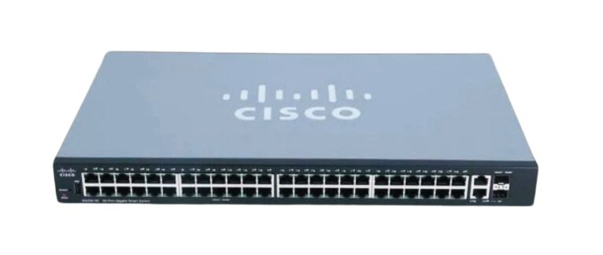
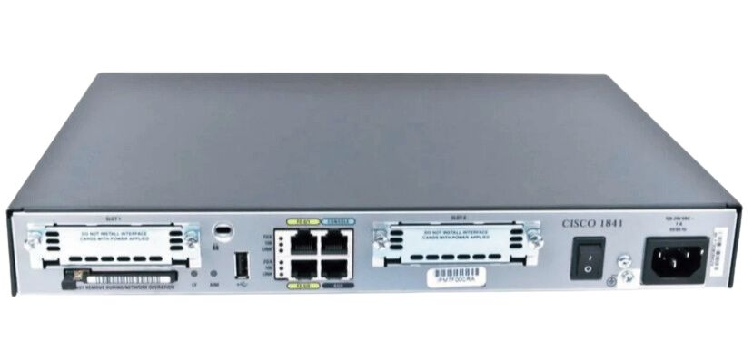
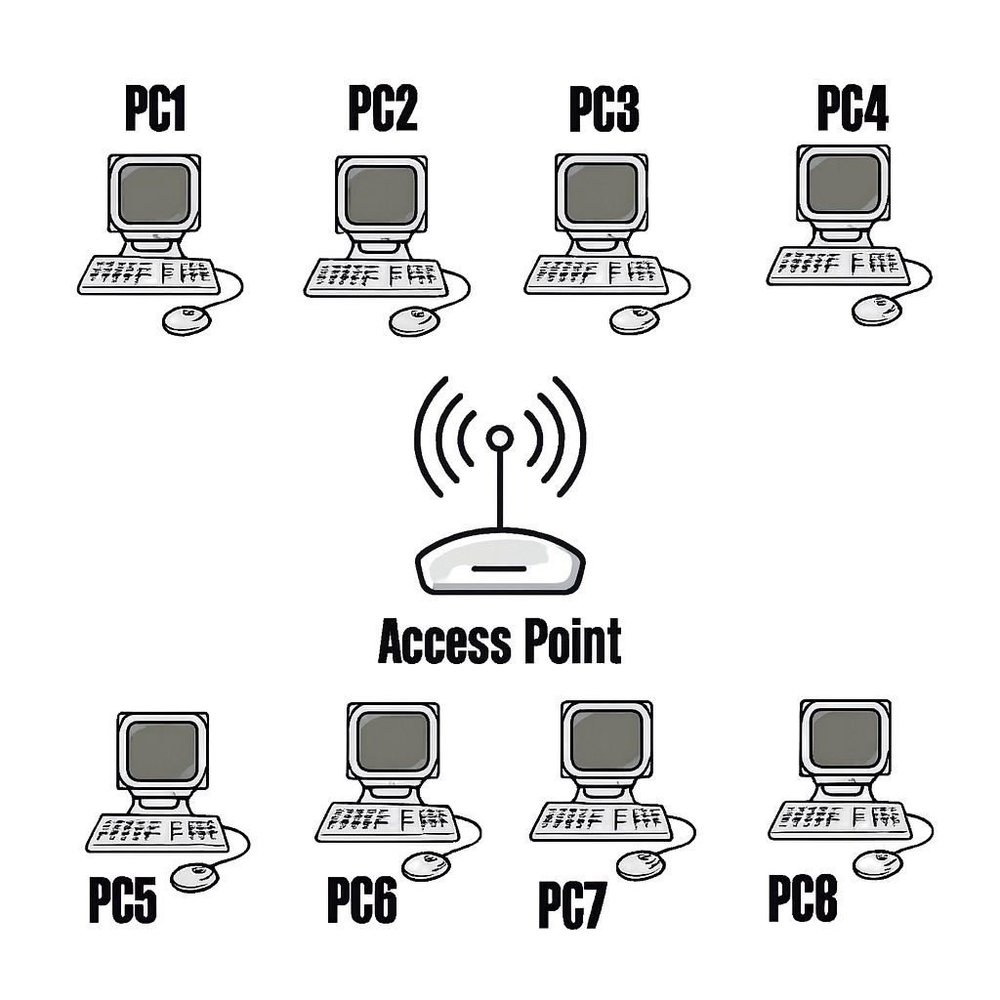

أكاديمية الشبكات الشاملة
المؤسسة العامة للتدريب التقني والمهني - Technical and Vocational Training Corporation
مبادئ شبكات الحاسب
تعريف الشبكة، الفوائد، المكونات، وأنواع الشبكات حسب التغطية والمعمارية والتصميم.
الأمان في الشبكات
مفهوم الأمان، التهديدات الداخلية والخارجية، الجدران النارية والحلول الأمنية.
نموذج OSI
الطبقات السبع، التغليف، مقارنات بروتوكولات النقل والأجهزة.
كيابل الشبكات
الأنواع (محوري، مجدول، ضوئي)، معايير التأريج، ووحدات قياس البيانات.
بروتوكول IP
الإصدار الرابع (IPv4) والفئات، والإصدار السادس (IPv6) وقوانين الاختصار.
مبادئ شبكات الحاسب
ما هي شبكة الحاسب؟
شبكة الحاسب عبارة عن مجموعة من الحاسبات والأجهزة الأخرى المتصلة مع بعضها البعض حيث يكون لها القدرة على مشاركة عدد كبير من المستخدمين للبيانات (Data) والأجهزة (Hardware) كما تعتبر الشبكة وسيلة اتصال الكتروني بين الأفراد.
فوائد شبكات الحاسب
مشاركة البيانات والمعلومات
مشاركة الموارد والأجهزة
مثل الطابعة (Hardware)
مشاركة البرمجيات (Software)
مشاركة الملفات مباشرة
بين الأجهزة بدلا من نقلها عبر البريد الإلكتروني
ممارسة ألعاب الكمبيوتر الجماعية
(Multiplayer) بين أكثر من مستخدم
مكونات شبكة الحاسب
تتكون شبكة الحاسب من ثلاث مكونات وهي :
الأجهزة الطرفية
Clients
الجهاز الطرفي: هو المكان الذي تنشأ منه الرسالة أو المكان الذي يتم استلامها فيه تنشأ البيانات باستخدام جهاز طرفي، وتتدفق خلال الشبكة، وتصل إلى جهاز طرفي آخر.


الاجهزة الوسيطة
وتقوم الأجهزة الوسيطة بالاتصال البيني بين الأجهزة الطرفية. هي الأجهزة المسؤولة عن توجيه الحزم ما بين المرسل والمستقبل.
(Switch)
(Router)
(Access Point)
(Firewall)
وسائط الشبكة
يتم نقل الاتصالات عبر الشبكة من خلال وسيط يسمح للرسالة بالانتقال من المصدر إلى الوجهة.
أولاً: الشبكات من حيث المدى الجغرافي

الشبكة الخاصة
PANالشبكة الشخصية (PAN) هي نوع من الشبكات التي تُستخدم لتوصيل الأجهزة القريبة من الشخص، عادةً في نطاق بضعة أمتار. هذه الشبكة تستخدم لتبادل البيانات بين الأجهزة الشخصية مثل الهواتف الذكية، الأجهزة اللوحية، أجهزة الكمبيوتر المحمولة، والسماعات اللاسلكية.

الشبكة المحلية
LANهي شبكة تربط مجموعة من أجهزة الحاسوب والأجهزة الطرفية داخل منطقة جغرافية محدودة مثل منزل، مكتب، مدرسة أو مؤسسة. تُستخدم لتبادل البيانات ومشاركة الموارد مثل الطابعات والملفات والاتصال بالإنترنت.

الشبكة المحلية اللاسلكية
WLANهي شبكة تستخدم تقنية الاتصال اللاسلكي (Wi-Fi) لربط الأجهزة مثل الحواسيب والهواتف الذكية والطابعات بنقطة وصول (Access Point) أو راوتر، مما يتيح تبادل البيانات والوصول إلى الإنترنت دون الحاجة إلى توصيلات سلكية.

الشبكة المتوسطة
MANوتعني "الشبكة الاقليمية". وهي شبكة حاسوبية تربط عدة شبكات محلية (LAN) ضمن نطاق جغرافي متوسط في حدود المنطقة.

الشبكة الواسعة
WANوتعني "شبكة منطقة واسعة". وهي شبكة تربط بين شبكات محلية (LAN) أو شبكات اقليمية (MAN) عبر مسافات جغرافية كبيرة، مثل مدن أو دول أو حتى قارات.
ثانياً: الشبكات من حيث معمارية الشبكة

شبكة نظير إلى نظير
Peer to Peer (P2P)
بنية شبكية موزعة تتصل فيها الأجهزة ببعضها مباشرة دون وجود خادم مركزي. كل جهاز يسمى "نظير"، ويعمل كـ (عميل وخادم) في نفس الوقت، مما يعني أنه يمكنه إرسال واستقبال البيانات من وإلى الأجهزة الأخرى.

شبكة العميل والخادم
Client / Server
هي بنية شبكية تعتمد على وجود خادم مركزي يقدم خدمات أو موارد، وعملاء يطلبون هذه الخدمات. يتصل العملاء بالخادم عبر شبكة، ويقوم الخادم بمعالجة الطلبات وإرسال الاستجابات.
ثالثاً: الشبكات حسب التصميم الهندسي

الشبكة الخطية
Bus
تعد الشبكة الخطية واحدة من أبسط وأقدم طرق توصيل أجهزة الكمبيوتر. تعتمد فكرتها الأساسية على توصيل جميع الأجهزة بكابل واحد رئيسي يعمل كعمود فقرى للشبكة.

الشبكة النجمية
Star
تعتبر الشبكة النجمية هي النوع الأكثر شيوعاً واستخداماً في الوقت الحالي، سواء في المنازل أو المكاتب الحديثة. سميت بهذا الاسم لأن شكل التوصيلات فيها يشبه النجم، حيث تتصل جميع الأجهزة بنقطة مركزية واحدة.

الشبكة الحلقية
Ring
تعتمد على توصيل كل جهاز بالجهاز الذي يليه مباشرة، بحيث تتكون دائرة مغلقة يمرّ عبرها البيانات بشكل منتظم.

الشبكة المعقدة
Mesh
شبكة ترتبط فيها الأجهزة بروابط متعددة، بحيث يمتلك كل جهاز أكثر من مسار للوصول إلى الأجهزة الأخرى.
الامان في الشبكات
مفهوم أمان الشبكات
أمان الشبكات هو مجموعة من السياسات والتقنيات التي تهدف إلى حماية البيانات والأجهزة المتصلة بالشبكة من الوصول غير المصرح به، أو سوء الاستخدام، أو الهجمات.
أهميته
حماية البيانات الحساسة
ضمان استمرارية العمل
منع الخسائر المالية
تعزيز الثقة في الأنظمة التقنية
التهديدات الداخلية للشبكة
هي التهديدات التي تأتي من داخل المؤسسة نفسها، سواء بقصد أو بدون قصد.
أمثلة على التهديدات الداخلية.
- موظف يشارك كلمة المرور مع الآخرين
- حذف ملفات مهمة عن طريق الخطأ
- استخدام أجهزة شخصية غير آمنة داخل الشبكة
- موظف غاضب يقوم بتخريب البيانات
لماذا هي خطيرة؟
لأن أصحابها غالبا يمتلكون صلاحيات وصول واسعة
التهديدات الخارجية للشبكة
هي التهديدات التي تأتي من خارج حدود الشبكة.
أمثلة على التهديدات الخارجية .
- هجمات الاختراق (Hacking)
- البرمجيات الخبيثة (Malware)
- هجمات حجب الخدمة (DDoS)
- التصيد الإلكتروني (Phishing)
- استغلال الثغرات الأمنية
خطورتها
قد تؤدي إلى سرقة بيانات تعطيل خدمات، أو ابتزاز مالي
حلول الأمان في الشبكات
الجدران النارية (Firewalls)
تعمل كحارس بين الشبكة الداخلية والعالم الخارجي، وتسمح فقط بالاتصالات المصرح بها
أنظمة كشف ومنع التسلل (IDS/IPS)
يكتشف الهجمات IDS يكتشف ويمنع الهجمات تلقائيًا IPS
التشفير (Encryption)
تحويل البيانات إلى صيغة غير مفهومة إلا لمن يملك مفتاح فك التشفير
إدارة الهوية والصلاحيات (Access Control)
تحديد من يمكنه الوصول إلى ماذا داخل الشبكة
تحديث الأنظمة والبرامج
سد الثغرات الأمنية باستمرار
النسخ الاحتياطي Backup
حماية البيانات من الفقدان أو التشفير (مثل هجمات الفدية)
التوعية الأمنية
تدريب المستخدمين على : عدم فتح الروابط المشبوهة - استخدام كلمات مرور قوية - الإبلاغ عن أي نشاط غير طبيعي
کیابل شبكات الحاسب
(Networking cables)
أنواع الكابلات و الموصلات في الشبكات:
. الكابل هو الذي تنتقل من خلاله البيانات و المعلومات من حاسب إلى أخرى في الشبكة أو من شبكة إلى شبكة أخرى.
أنواع كبلات الشبكات:
1. كابل محوري.
Coaxial Cable